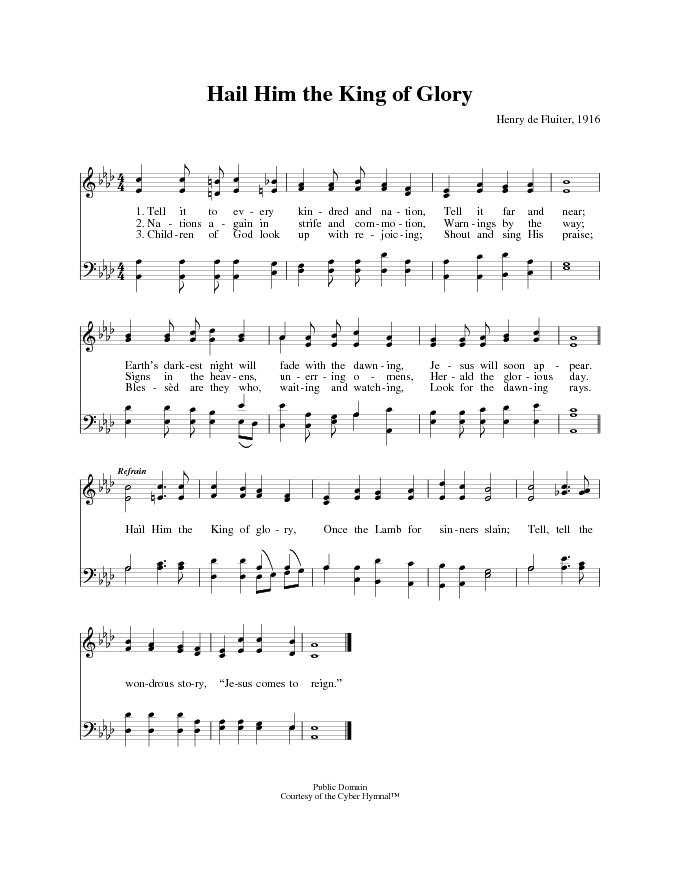
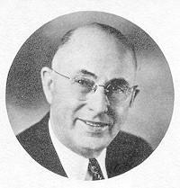

|
¡@ |
¡@ |
|
¡@Hail Him The King of Glory Lyrics Tell it to every kindred and nation,
|
¡@ |
|
¡@  |
|
|
¡@ |
¡@ |

|
¡@ |
¡@ |
|
¡@Hail Him The King of Glory Lyrics Tell it to every kindred and nation,
|
¡@ |
|
¡@  |
|
|
¡@ |
¡@ |

¡@
¡@
| Text: | Hail Him the King of Glory |
| Author: | Henry de Fluiter |
| Tune: | [Tell it to every kindred and nation] |
| Composer: | Henry de Fluiter |
| Short Name: | Henry de Fluiter |
| Full Name: | de Fluiter, Henry, 1872-1970 |
| Birth Year: | 1872 |
| Death Year: | 1970 |

Henry (Hendricus)
de Fluiter was one of the
most prolific writers of gospel music in the Seventh-day Adventist church in the
early years of the 20th century, writing over 200 songs.
In a limited way he was continuing the work of Franklin E. Belden, who had
written numerous hymns and gospel songs in the beginning years of the church.
While 22 of Belden's hymn tunes were included in the 1941 Church
Hymnal and sixteen in the 1985 Seventh-day
Adventist Hymnal, only two of de Fluiter's were
included in each of those publications.
Henry was born in
Hilversum, Holland, on August 29, 1892, the son of Franz and Johanna Maria
Jansen de Fluiter. His parents
emigrated to the U.S. when he was nine and settled in Cleveland, Ohio. He joined
the Adventist church in 1899 and immediately began leading the music in
crusades, working with several prominent evangelists. His association with
H.M.S. Richards and his crusades and eventual radio broadcasts in California
started when de Fluiter was
in his fifties and would continue for twelve years, leading to greater
recognition for his musical leadership and song writing.
He served as a pastor
in California churches for 68 years. He and his wife, Elsie Huffaker,
had married in 1899 and they had four children. He was living in Azusa,
California, at the time of his death on March 5, 1970, at age 97.
ds/2017
Sources: Seventh-day
Adventist Encyclopedia,
Volume 10, Revised Edition, 1976, (Review and Herald Publishing Association)
385; Obituary, Review and Herald, 7 May 1970, Source: Wayne
H. Hooper and Edward E. White, Companion to the Seventh-day
Adventist Hymnal, 1988, Review and Herald Publishing Association, 249-50;
1880, 1900, 1910 U.S. Federal Census Records; Kezia Jane
Hallmark Family trees, Ancestory.com.
Henry de Fluiter
1872-1970
Dorothy Minchin Comm
On a Sunday afternoon
in 1882 Dwight L. Moody and Ira D. Sankey walked out onto the stage of Doan's
Tabernacle and Music Hall in Cleveland, Ohio. As Mr. Sankey sat down at the
great theater organ, he unknowingly initiated a process which would change the
life of one round-faced, ten-year-old boy in the audience.
Great swells of music
rolled up into the first balcony and then the second. Then Sankey asked the
people to join him in singing the old favorite, Bringing in the
Sheaves. The verses, in unison and then harmony, leaped from one balcony to
another and crested in a grand chorus that "consumed" the whole auditorium and
every person in it.
Eyes round with
wonder, Henry de Fluiter stood
tall beside his father, his boyish soprano blending into the throng of voices
around and above him. "And that is when I decided," he was to say in later life.
"I decided that I wanted to make people sing beautiful gospel music, just like
Mr. Sankey did that day."
Since there were no
other musicians in the family, however, Henry kept his thrilling secret for
several weeks. Finally, he confided in his father. "When I grow up, I want to be
a singing evangelist, just like Mr. Sankey."
His father stared down
at him. "You - a singer?" He
smiled patronizingly. "No, you'll never be a singer, Henry. But
your brother John - now he will sing." (Later Henry would
recall that John couldn't even carry a tune.)
At first utterly
demoralized, young Henry rallied and promised himself that he would indeed lead
people to God through gospel music.
A year earlier, in
1881, Henry de Fluiter's parents
had emigrated to the United
States from Hilversun, Holland, and his
father went to work in a Cleveland factory. Devoutly religious members of the
Dutch Reformed Church, they had often, while still in the old country, invited
friends in for Bible study on Sundays. Henry remembered how often the adults
talked about the Second Coming of Christ. Later he would make this the dominant
theme of his 68-year-long ministry to the Seventh-day Adventist church.
In time, attracted by
a better job offer, the de Fluiters moved
south to the small town of Ravenna, Ohio. But Henry had already formed his city
connections and elected to stay in Cleveland. He rented a room from the Martins,
Methodist neighbors. Mr. Martin was a sign painter by trade. Fascinated by the
brilliant colors and being attracted to the musical interests of the family,
Henry decided to become a sign painter also.
One evening Willard H.
Saxby, minister of the local Seventh-day Adventist church, visited the Martin
home. Fortunately he was a better visiting pastor than a public speaker. He
launched into several weeks of Bible studies. The Martins could not be
reconciled to the Sabbath doctrine, but Henry accepted all of the new teachings.
Full of zeal, he set
off on his bicycle, travelling the 25 miles to tell his parents about what he
had learned. It turned out to be a happy family reunion instead of a
confrontation. Having been visited by a Seventh-day Adventist colporteur, the
elder de Fluiters had just
made the same decision for themselves.
In 1899 Henry was
baptized in Lake Erie and joined the struggling little Cleveland church. As yet
he had had no musical training. Throughout his teen years, however, he had
conducted the choir for the Epworth League in a large, local Methodist Church
and had also experimented with a few songs - for special occasions, like
Christmas and Easter.
His eyes were still
fixed on a ministry like that of lra D.
Sankey, so Henry applied to the Moody Bible Institute in Chicago. There he had
the choice of just two courses: Bible-Music (for ministers) and Music-Bible (for
song leaders). He chose the latter and stayed for one term. Still, he'd had no
formal music education. Moreover, because of a severe laceration of one of his
thumbs, he was never even able to play the piano.
Upon leaving Chicago,
Henry returned to Cleveland to resume his sign-painting vocation and to wait for
his horizons to broaden. His first opportunity came in the form of the new
pastor of the Cleveland church, Elder D. E. Lindsey. Descended from a long line
of Methodist pastors, Lindsey looked like Dwight Moody, loved to sing, and
enthusiastically carried on public evangelism.
He invited de Fluiter to
be his song leader in a series of summer meetings he planned in a nearby rural
Ohio community. Conference officials were shocked. You want us to pay someone
just to help with the music? Who had ever heard of such a thing! Surely the
preacher could do that for himself.
A man of force and
independence, however, Lindsey took de Fluiter with
him to northwest Ohio. Henry received $3.00 a week (from the people) for his
services. Certainly not a lavish sum for a
young married man soon to become a father. When the meetings
ended, Henry, of course, had to go back to sign painting.
About 1902 he wrote
his first Adventist song, inspired by Elder Lindsey's preaching on the
prophecies of the twenty-fourth chapter of Matthew. After writing Matthew
Twenty-four, he had to rely on Lindsey's capable pianist to harmonize the
tune for him. Its Premiere performance was at one of the evening meetings. From
there, the song went on to become a long-standing evangelistic success.
A few years later,
while working with the big camp meeting choir in Denver, Colorado, he attracted
the attention of Charles T. Everson. The evangelist invited him to join him in
New York City, a commission which lasted from 1914 to 1916. The New York
meetings were held on a big scale, Sunday nights in large theaters and
weeknights in halls. De Fluiter gathered
together a huge choir, supported by an orchestra. (Amazingly, it happened that
most of the workers at the Review & Herald Publishing Association branch in the
city played musical instruments.)
In 1914 World War I
had just begun, and the popular song ¡§Over There¡¨ had captured
public interest. Henry promptly offered his interpretation in his own
soon-to-be-famous song, ¡§Over Yonder.¡¨
Now calls came from
other evangelists wishing to have lively song services too. And the conferences
began to give Henry "a little something" for each meeting. Maybe, they
conjectured, a singing evangelist was not a bad investment after all. Between
times, however, Henry always had to go back to his brushwork.
The real breakthrough
came in 1926 at the Milwaukee General Conference session. H. M. S. Richards, a
promising young evangelist, invited de Fluiter to
join him for two weeks of meetings in Little Rock, Arkansas. (Richards' father,
H. M. J. Richards, was the conference president there.) For the first time de Fluiter would
be a song leader full time. The two men waited on the Grand Dragon of the Ku
Klux Klan and negotiated the rental of the Klan Tabernacle for their meetings.
After that series,
Richards inquired, "Now we can go either to Florida or California. Which place
would you prefer?" Henry opted for the West Coast, so the new team began work in
Central California. First, they built a tarpapered tabernacle in Visalia - in
just three days. Later came Bakersfield
where Henry recruited a fine group of German singers from nearby Shafter for his
80-voice choir. Meetings convened nightly, except Mondays.
"I'm praying for 101
souls from these meetings," Henry told Richards.
"But
why have you settled on 101?"
"Just to be sure it's
over 100." The final count turned out to be 144.
Then the team worked
Fresno for nine months. Next came Hanford
and Merced. Crowds of 2000 and 3000 people were not uncommon. With no
competition from radio and television, people liked to come out to public
meetings. Meanwhile, de Fluiter painted
all the posters and set up huge signs, thereby minimizing advertising expenses
to cost only. Not once did he ever hide the Seventh-day Adventist identity of
the meetings. Usually, after two or three weeks, the campaigns carried
themselves by their own momentum without further advertising.
The series held in
Long Beach channeled the ministry at last into radio. There the Voice of
Prophecy officially began, though originally the broadcast was called Tabernacle
of the Air. De Fluiter's choir
and orchestra were now heard daily on the air.
For the next twelve
years the team worked together. Richards' love of music shaped the program for
decades - the music of the old "sawdust trails." The preaching of Richards
repeatedly inspired the songs of de Fluiter.
And never did Henry accept payment for the use of his songs by the Voice of
Prophecy. Regular church pastoring augmented the steady flow of songs which he
kept up all of his life.
Each song, of course,
had its own origin and motivation. A member of Henry's Gardena, California,
church suffered a heart-breaking experience. "Ah, Pastor," she sighed, "I'm just
homesick for heaven now." Instantly Henry picked up the new theme. Within hours
he had written, ¡§Homesick for Heaven.¡¨
His sister Anna
returned from twenty-two years of mission service with her husband in India. She
became so painfully arthritic that she had to be confined to a home in Shafter.
"So," he said, "for her I wrote a song based on our 'love-word," 'maranatha."'
(For himself, old age was more kind. At 89 he could say, "I haven't an ache or a
pain.")
¡§Longing,¡¨ perhaps his
most popular song, has been sung around the world in several languages. It arose
out of his pain at seeing a rabbit accidentally stumble into the campfire during
a hike with his Pathfinders in the Rocky Mountains. Suffering, human or
otherwise, always made Henry cling all the more tenaciously to his hope of
heaven.
Henry de Fluiter wrote
between 200 and 225 gospel songs. Half of them were on the Second Coming of
Christ. How could he find fresh approaches to the same theme, year after year?
"The idea is always uppermost in my mind," he told his protege,
Wayne Hooper. "I think of nothing else. And so it happens - the mouth speaks out
of the fullness of the heart, you see."
He took no interest in
doctrinal or theological controversies. He simply fixed his eyes continuously on
the final event. "Wayne," he used to say, "I'm going to be alive when Jesus
comes!"
After waiting [almost]
98 years, however, he died on March 5, 1970, the hope as bright within him as
ever it had been. Like most creative artists, de Fluiter's favorite
song was always the most recent one he'd written. Fittingly, his last one was ¡§That
Day Must be Near.¡¨
De Fluiter and
Richards were both men to be reckoned with - the stuff that pioneers are made
of. At a testimony meeting once, with some 1,000 persons ready to speak,
Richards curbed the effusions of one garrulous old saint who was taking up too
much time. On the signal, de Fluiter brought
on the choir, in full chorus. When the man tried to start up his preachments
again, de Fluiter's choir
"sang him down" a second time.
In his enthusiasm,
Henry would sometimes beat time with his feet as well as his hands. Music simply
possessed him. Even when he broke his foot, he couldn't stop thumping his cast
on the floor.
When the two old
troupers met together for the last, time in public at the Vallejo Drive Church,
Glendale, California, in 1964, Richards reminisced wistfully. "Al, my brother,
we could still pitch a tent, even now . . . ."
Dorothy Belle Minchin Comm (1929
- ), professor in English at La Sierra University when this article was written,
was editor of Adventist
Heritage. A prolific writer, she has written over ten books and numerous
articles. Minchin-Comm is a professor
emeritus at LSU.
Reprinted from the Spring 1991 issue of Adventist Heritage with permission from La Sierra University.
http://www.iamaonline.com/Bio/Henry_de_Fluiter.htm
¡@